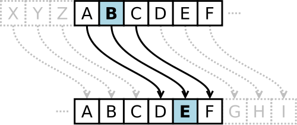

Krypteringens Funktionalitet
Kryptering är en teknik som förvandlar en text till en oläslig form, vilket innebär att samma indata alltid ger samma utdata. Detta gör det möjligt att återfå den ursprungliga texten. I själva verket är kryptering troligtvis lika gammal som själva skriftspråket. Redan under Julius Caesars tid använde man sig av kryptering för att skydda känslig information i meddelanden. Caesars metod innebar att man försköt alfabetet med ett antal steg, där nyckeln var detta tal.
Den moderna era av kryptering inleddes efter andra världskriget, i slutet av 1940-talet, med viktiga bidrag från Claude Shannon och Warren Weaver. Deras arbete lade grunden för den samtida krypteringen, vars huvudsyfte ursprungligen var att förhindra fienden från att få tillgång till konfidentiell information under krig.
Idag används kryptering inte enbart i krigssituationer. När vi betalar våra räkningar online eller handlar på nätet, är kryptering en vanlig del av processen. Detta kan enkelt observeras genom att hänglåset som visas i webbläsaren indikerar att den data som skickas och mottas är skyddad. Det finns flera olika metoder inom kryptografi, och varje metod omfattar ett antal beräkningsstrategier som kallas algoritmer, vilka ofta är patenterade. Licenskrav för användning av krypteringsalgoritmer är också ganska vanliga.
Kryptering består av två huvudsakliga komponenter: en algoritm och en nyckel. Vid kryptering av information används både algoritm och nyckel. Nyckeln är hemlig, medan algoritmen kan vara antingen hemlig eller offentlig. För att dekryptera informationen krävs tillgång till både nyckeln och algoritmen.
Två framstående exempel på symmetrisk kryptering är Triple DES (3DES) och Advanced Encryption Standard (AES). AES är effektiv nog för att användas i mobiltelefoner och finns i nyckellängder på 128, 192 och 256 bitar. AES bygger på en metod för substitution och permutation, vilket innebär att texten transformeras genom en serie av olika substitutioner och permutationer, som alla genomgår ett varv. Antalet varv varierar beroende på nyckellängden: AES-128 har 10 varv, AES-192 har 12 varv och AES-256 har 14 varv. Varje varv omfattar fyra steg: byte substitution, radskiftning, kolumnblandning och nyckeladdition, med undantag för det sista varvet där kolumnblandningen utelämnas.